Office hours · UK time
Mon – Fri
9:00 – 17:00
Office hours
Public holidays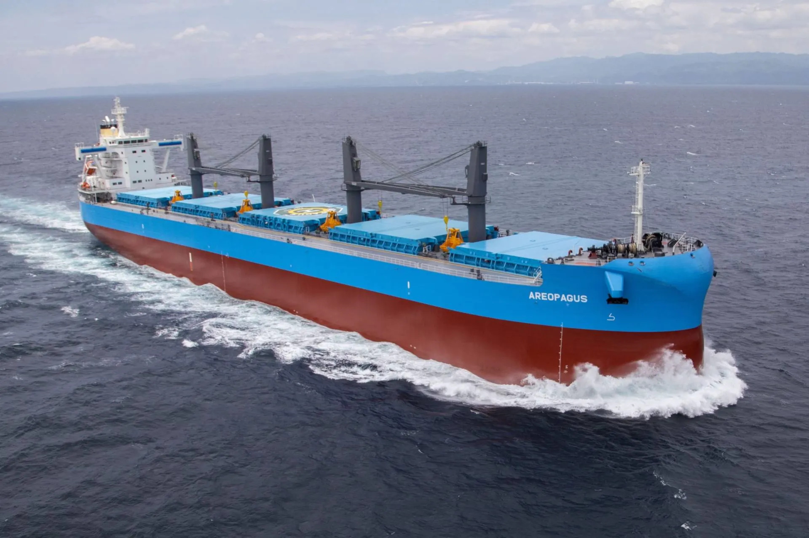
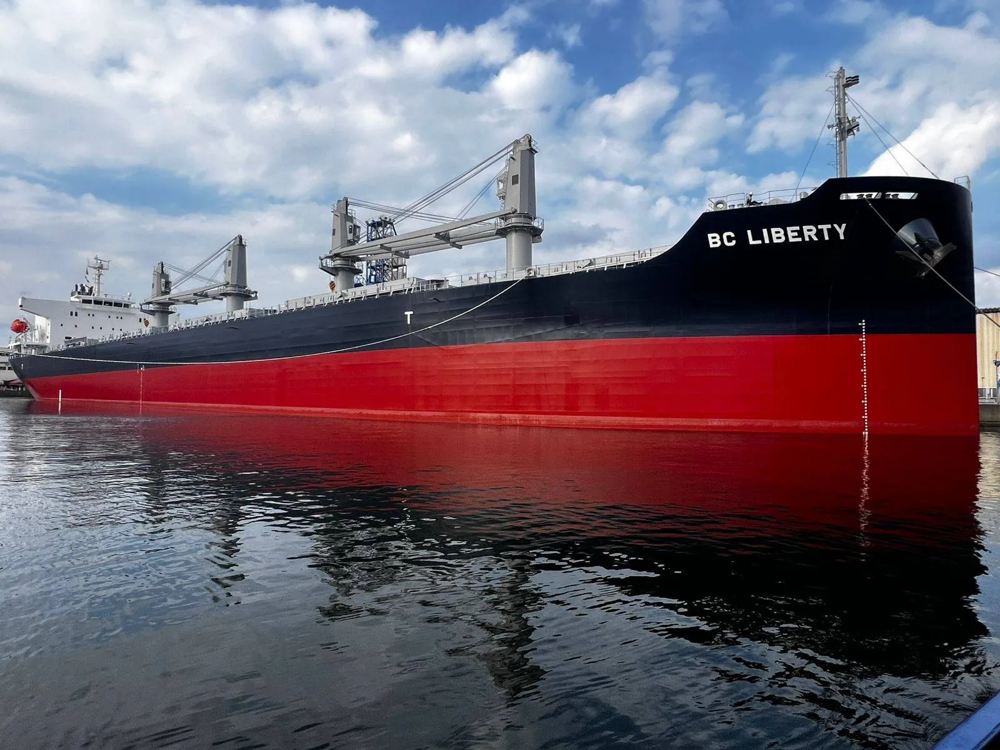
Port of registry — Bridgetown, Barbados · 13°06′N 59°37′W
White-listed in the Paris MOU, approved for the USCG QUALSHIP21 programme, and accredited to ISO 9001.
01 / 12
24/7 emergency line · 365 days a year
+44 (0)7494 116754For emergencies only. Urgent dispensations and exemptions are dealt with outside office hours, and the Principal Registrar can be contacted directly.
General enquiries
+44 (0)207 636 5739office@barbadosmaritime.com
Barbados High Commission, 1 Great Russell Street, London WC1B 3ND
Who we are & what we do
Barbados Maritime Ship Registry offers the discerning ship operator a first-class personal service in all aspects of ship registration.
We act as Executive Agents for and on behalf of the Barbados Government. White-listed in the Paris MOU, approved for the USCG QUALSHIP21 programme, and accredited to ISO9001, the BMSR provides a quality-driven service second to none.
We provide a 24/7 emergency service, 365 days a year; urgent dispensation and exemptions may be dealt with outside of normal office hours, and the Principal Registrar may be contacted directly for help, advice and guidance. The whole team at BMSR is dedicated, friendly and helpful.
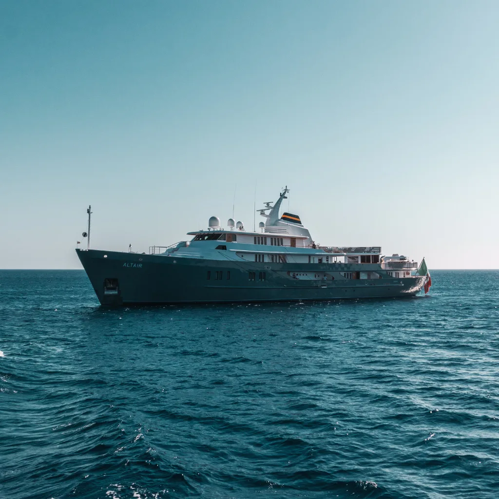
Why the Barbados flag
What owners and managers get when they register under the Barbados flag.
Services
A network of Nautical Inspectors is available to carry out annual ship safety inspections and to assist ship operators whenever required.
List of inspectorsBarbados has been a member of IMO since 1971, and has ratified many of the international conventions that have been instrumental in shaping the world’s shipping legislation.
ConventionsWe provide regular bulletins to keep our clients and associates abreast of new developments, and work closely with all our ship owners and managers to help maintain a quality fleet.
BulletinsEleven IACS classification societies, as well as several other recognised organisations, have been appointed to survey and issue statutory certificates on our behalf.
See the listGuidance
Follow BMSR on LinkedIn for all of the latest updates.
Follow on LinkedInThe Barbados flag · in figures
Accreditations, affiliations & recognised organisations
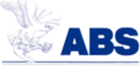
ABSIACS member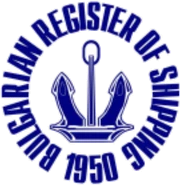
BKR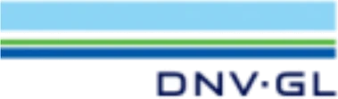
DNVIACS member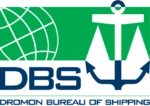
Dromon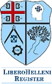
Hellenic Register of Shipping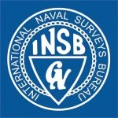
INSB Class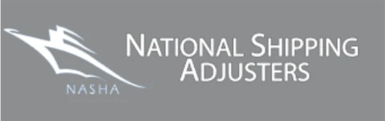
NASHA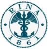
RINAIACS member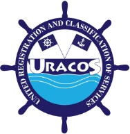
URACOSRegister with Barbados
Vessels and mortgages can be registered within a few hours, with electronic certificates on board in minutes. Talk to the team about your ship or fleet.